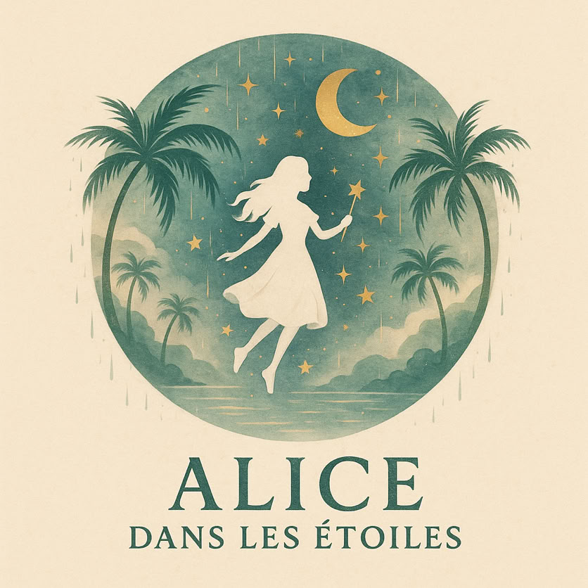

Alice est née le 12 août 1941 à Merksem - Anvers dans une famille où l’on façonnait des canapés et des meubles avec les mains, l’odeur du bois et du tissu. Fille d’artisans, elle a grandi entre les étoffes, les outils, et cette exigence silencieuse du travail bien fait. Son frère, Peter, a poursuivi la tradition familiale. Elle, elle a pris une autre route.
Très tôt, elle a compris que le monde ne se limiterait pas à l’atelier. Elle avait l’énergie des bâtisseurs et l’esprit des pionniers. Elle s’est tournée vers l’informatique, les serveurs, les réseaux — à une époque où ce territoire était encore largement masculin. Elle n’a demandé la permission à personne. Elle a appris, elle a maîtrisé, elle a dirigé. Femme de poigne, précise, rapide, avec ce punch qui fait taire les doutes.
Elle parlait plusieurs langues comme on ouvre des fenêtres. Elle aimait comprendre, circuler, connecter — les machines, les systèmes, les gens.
À la retraite, fidèle à son tempérament, elle n’a pas choisi l’immobilité. Elle a décidé de construire une maison en France, une chambre d’hôtes. Un lieu à son image : chaleureux, structuré, exigeant et vivant. Elle a bâti ce projet avec détermination, et moi, j’en étais le manager, le complice, le partenaire de cette aventure. Ce n’était pas seulement une maison. C’était un royaume discret, un endroit où l’on recevait avec élégance et générosité.
Alice avait deux enfants. Elle était une mère. Point.
Mais surtout, elle était intensément vivante.
Elle aimait le vin — le bon, celui qui a du caractère. Elle aimait la bonne nourriture, celle qui rassemble autour d’une table et prolonge la soirée. Elle aimait voyager, sentir les villes, écouter les langues, goûter les cultures. Elle aimait le sexe aussi, sans hypocrisie, avec la même énergie qu’elle mettait dans tout : présent, assumé, joyeux. Elle était de celles qui embrassent la vie à pleine bouche.
Elle est morte le 12 août 2022 à Brasschaat, en Anvers. Le jour exact de ses 81 ans. Une date presque mythologique, comme si sa vie formait un cercle parfait.
Alice n’était pas une femme fade. Elle était structurée comme un serveur bien configuré : solide, fiable, puissante. Et en même temps charnelle, rieuse, vibrante.
Il y a des personnes qui traversent l’existence.
Elle, elle l’a habitée.
Et ce genre de présence ne s’efface pas. Elle change simplement de forme.
Je t’ai rencontrée en 1994.
Ce n’était pas un coup de foudre hollywoodien. C’était mieux que ça. C’était une rencontre solide. Une rencontre qui tient debout.
À l’époque, j’habitais à Bruxelles, toi à Anvers. Deux villes, deux rythmes, deux vies parallèles. Tu m’as demandé de venir vivre avec toi. Ce n’était pas une supplique, c’était une proposition claire, presque stratégique, comme tu savais les formuler. Et j’ai dit oui.
Nous avons d’abord été amis. Dix ans d’amitié. Dix ans d’une complicité rare, dense, intelligente. On parlait de tout. On riait beaucoup. On se respectait profondément. C’était une amitié adulte, libre, vibrante. Une amitié qui avait déjà les fondations d’un couple, sans encore en porter le nom.
Puis un jour, naturellement, presque logiquement, nous sommes devenus un couple. Un couple solide. Pas parfait au sens naïf, mais parfaitement accordé. Nous nous entendions bien. Nous étions alignés. Toi avec ton énergie de commandante de bord, moi avec ma capacité à organiser, à structurer, à soutenir.
Je travaillais toujours à Bruxelles. Ce n’était pas simple. Deux voitures. Des heures de route. Des allers-retours qui usent les nerfs et le carburant. Mais le soir, je revenais à toi. Et ça rendait les kilomètres supportables.
Quand tu as pris ta retraite, la vie a changé de vitesse. Toi, tu ne savais pas rester immobile. Tu as décidé de construire cette maison en France, notre chambre d’hôtes. Une nouvelle aventure. Un nouveau terrain de jeu.
Moi, j’étais plus jeune. J’ai donné mon préavis à mon employeur. Il n’était pas content. Tant pis. La vie ne se négocie pas avec les frustrations des autres. J’ai pris les rênes avec toi.
Peinture. Aménagement. Création de meubles. Jardin. Choix des couleurs. Odeur du bois. Terre sous les ongles. Et ce site internet que j’ai créé pour donner une vitrine à notre royaume. Nous étions une équipe. Une vraie. Chacun avec sa force. Chacun avec son domaine.
C’était excitant. Physiquement fatigant, oui. Mais mentalement exaltant. On construisait quelque chose de concret, de beau, de vivant. On recevait des gens, on partageait des repas, des bouteilles ouvertes, des conversations tardives.
Il y avait du travail, il y avait du désir, il y avait du rire.
Ce qui est rare, ce n’est pas seulement d’aimer quelqu’un.
Ce qui est rare, c’est de construire avec quelqu’un.
Et avec toi, Alice, tout était construction. Même l’amour.
Aujourd’hui, je dédie ce site à sa mémoire.
Certains diront que ce n’est qu’un site internet. Quelques pages, du texte, des photos. Du numérique, donc quelque chose d’impalpable. Presque futile.
Ils se trompent.
Un site, c’est une trace. Une architecture de mémoire. Une manière de dire : elle a existé. Elle a aimé. Elle a travaillé. Elle a ri. Elle a construit. Elle a traversé ce monde avec intensité.
Ce site n’est pas un monument de pierre. C’est mieux. C’est vivant. Accessible. Partageable. C’est une présence qui circule. Comme elle aimait circuler entre les langues et les pays.
J’y mets un beau texte.
J’y ajoute quelques photos.
Cette si jolie femme.
Pas seulement jolie au sens des traits. Jolie dans la force. Jolie dans l’assurance. Jolie dans ce mélange rare d’intelligence technique et de sensualité assumée.
Il y a quelque chose de profondément humain à vouloir laisser une trace. Depuis les grottes préhistoriques jusqu’aux serveurs modernes, on grave des noms, des visages, des histoires. On refuse le silence absolu. Ce n’est pas futile. C’est presque biologique.